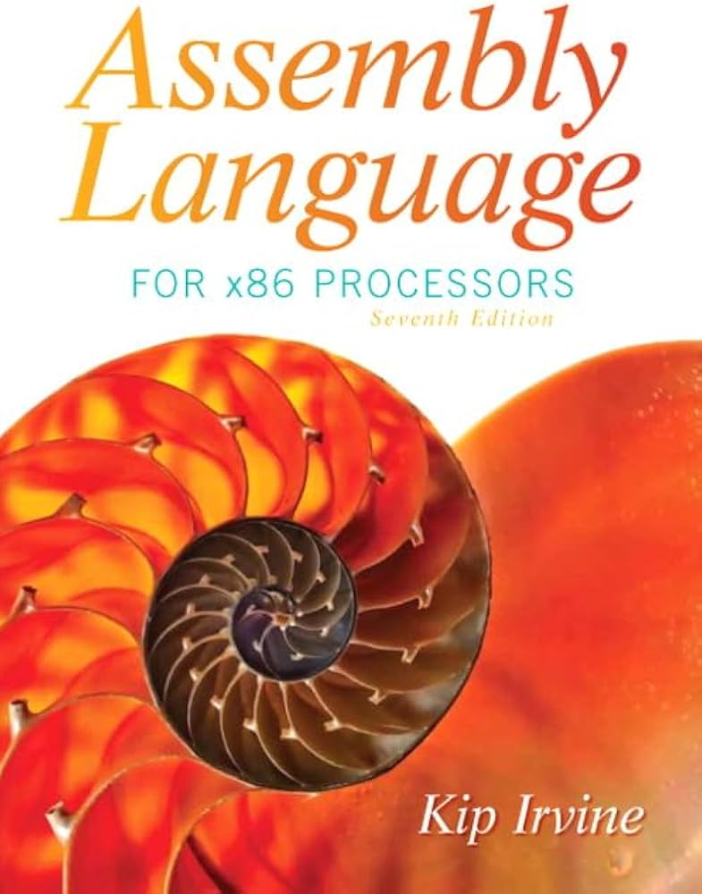
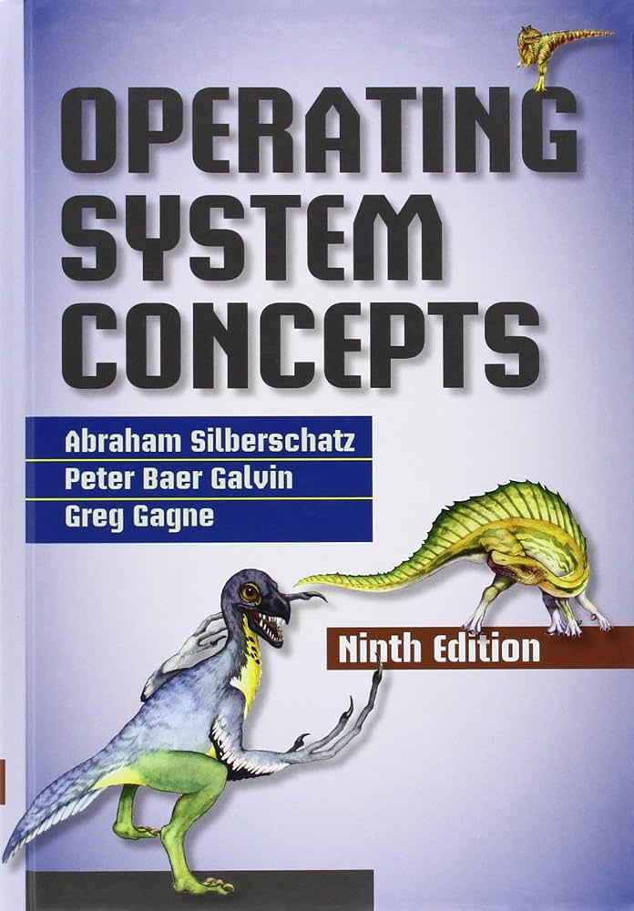

● ملخصات:
دفتر أحمد الشنطي
ملخص رنيم النغربي
● شروحات:
- ElCoM HU
- MBI
- Hashim EduTech
● كتب:
1-Digital Design — M. Morris Mano & Michael D. Ciletti
2-Fundamentals of Digital Logic with Verilog Design — Stephen Brown & Zvonko Vranesic
3-Digital Design and Computer Architecture — David Harris & Sarah Harris
● ملخصات:
دفتر م.روز
ملخص رنيم المغربي
● شروحات:
- Spark Team
- ZerOne Team
- CNE Family
● كتب:
1-Assembly Language for x86 Processors — Kip R. Irvine
2-The Art of Assembly Language — Randall Hyde

● ملخصات:
دفتر ليان ياسين
● شروحات:
- د. شادي الزعبي
- د. أحمد حجاج
● كتب:
1-Operating System Concepts — Silberschatz, Galvin & Gagne
2-Modern Operating Systems — Andrew S. Tanenbaum & Herbert Bos
3-Operating Systems: Three Easy Pieces — Remzi H. Arpaci-Dusseau & Andrea C. Arpaci-Dusseau
